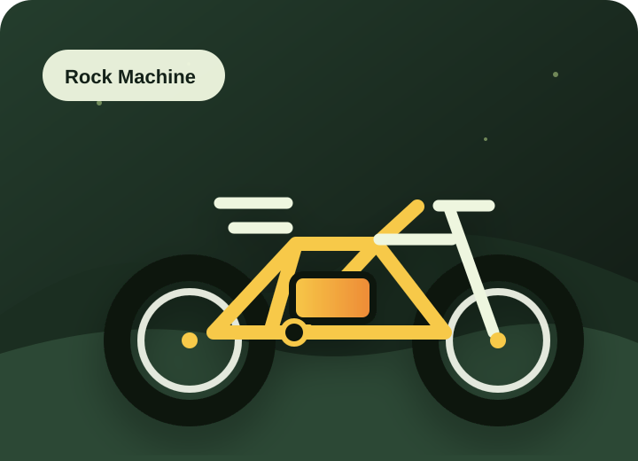

Sähköavustus auttaa ylämäissä
Avustus tekee ajamisesta kevyempää ja auttaa nauttimaan reitistä myös vaihtelevassa maastossa.
Sähköfatbike-vuokraus Kuopiossa
Lähde kevyemmin lumelle, soralle ja metsäpoluille. Vuokraa Rock Machine Vyöry e50R -sähköfatbike helposti WhatsAppilla – kypärä ja lukko kuuluvat aina mukaan.

Miksi vuokrata?
Avustus tekee ajamisesta kevyempää ja auttaa nauttimaan reitistä myös vaihtelevassa maastossa.
Fatbiken renkaat sopivat lumeen, soralle ja poluille, kun haluat ajaa ympäri vuoden.
Vuokraus on helppo tapa testata sähköfatbikea ennen omaa hankintaa tai viikonloppuretkeä.
Jakelualueella toimitus ja nouto sisältyvät varaukseen. Muualle Kuopioon sovitaan tapauskohtaisesti.
Pyörät
Rock Machine Vyöry e50R on sähköavusteinen fatbike vaativiin olosuhteisiin. Jykevä runko, Shimano EP6 -moottori ja laadukkaat komponentit auttavat ajamaan sulavasti lumessa, mudassa ja kivikkoisilla poluilla.
Hinnasto
Kypärät ja lukot kuuluvat vuokraukseen. Kysy tarjous pidemmälle vuokra-ajalle.
20 €
Nopea kokeilu tai lyhyt lenkki lähialueella.
65 €
Hyvä valinta mökkipäivään, retkeen tai pidempään testiajoon.
200 €
Pidempään lomailuun tai rauhalliseen tutustumiseen.
Mitä vuokraus sisältää?
Kenelle tämä sopii?
Toimitus ja nouto
Ilmainen toimitus ja nouto Saaristokaupungin jakelualueella. Muualle Kuopioon toimituksesta sovitaan erikseen varauksen yhteydessä.
Reittivinkit
Tähän osioon voidaan lisätä myöhemmin GPX-reittejä ja tarkempia reittiehdotuksia.
Kevyt maisemalenkki veden äärellä. GPX tulossa.
Helppo reitti ensikertalaiselle. GPX tulossa.
Polkuhenkinen kierros talvikeleille. GPX tulossa.
Varaus
Lähetä viesti valmiilla pohjalla, niin sovitaan saatavuus, vuokra-aika ja toimitus tai nouto.
UKK
Et tarvitse. Kypärät kuuluvat vuokraukseen, mutta voit halutessasi käyttää myös omaa sopivaa kypärää.
Kyllä. Viikkohinta on 200 €, ja pidemmistä vuokrauksista voit kysyä erillisen tarjouksen.
Kyllä. Pyöränkuljetustelineen voi vuokrata lisämaksusta 20 € / varaus.
Saaristokaupungin jakelualueella toimitus ja nouto ovat ilmaisia. Muualle Kuopioon toimituksesta sovitaan erikseen.
Maksutavat ovat kortti, mobiilimaksu, käteinen ja ePassi. Vuokra maksetaan kokonaisuudessaan etukäteen.
Kyllä. Leveät renkaat ja sähköavustus sopivat hyvin talviolosuhteisiin, kun ajat huolellisesti kelin mukaan.
Sopimusehdot
Vuokranantaja: Notko Oy, Y-tunnus 3301830-3.
Vuokranantaja: Notko Oy (Y-tunnus 3301830-3).
Vuokraaja (asiakas): henkilö, yritys tai muu yhteisö; yrityksen tulee nimetä vastuuhenkilö.
Vuokrattavat sähköpyörät varusteineen ovat vuokranantajan omaisuutta.
Pyöriä ei saa viedä Suomen rajojen ulkopuolelle ilman erillistä kirjallista sopimusta.
Vuokra maksetaan kokonaisuudessaan etukäteen.
Vuokraajalta tarkastetaan voimassa oleva kuvallinen henkilöllisyystodistus (ajokortti, henkilökortti, passi).
Pyörää on käytettävä huolellisesti ja tieliikennelain mukaisesti. Stunt-, extreme- ja kilpailukäyttö, hyppyrit yms. ovat kiellettyjä.
Asiakas ei saa luovuttaa pyörää kolmannelle osapuolelle ilman vuokranantajan kirjallista lupaa.
Pyörän käyttäminen kaupallisiin tai ammattimaisiin tarkoituksiin, kuten ruokalähettinä toimiminen tai pyörän edelleen vuokraaminen, on kielletty ilman erillistä kirjallista sopimusta vuokranantajan kanssa.
Vuokraaja tarkistaa pyörän perustoiminnot (renkaat, jarrut, vaihteet) ennen vuokrauksen aloittamista ja ilmoittaa puutteista välittömästi.
Vuokraajan on oltava vähintään 18-vuotias. Alaikäinen saa käyttää pyörää vain huoltajan valvonnassa.
Pyörä on aina lukittava rungosta kiinteään rakenteeseen toimitetulla lukolla, kun se jätetään valvomatta.
Yöaikainen valvomaton ulkosäilytys on kielletty.
Akku ladataan vain valvotussa, kuivassa tilassa; lataus sateessa tai suorassa auringonpaisteessa on kielletty.
Asiakas vastaa kaikista pyörälle, varusteille, itselleen tai kolmansille osapuolille aiheutuneista vahingoista.
Vuokranantaja ei vakuuta asiakasta; asiakkaan tulee huolehtia omasta vakuutusturvastaan.
Asiakas vastaa vahingoista ja varkaustilanteissa enintään pyörän ja varusteiden täydestä jälleenhankinta-arvosta.
Pienemmät vauriot korvataan varaosan hinnan ja korjaustyön mukaisesti.
Törkeä huolimattomuus – kuten pyörän lukitsematta jättäminen, käyttö päihtyneenä, lainvastaisessa tarkoituksessa tai pyörän luovuttaminen kolmannelle osapuolelle vastoin ehtoja – voi johtaa siihen, että asiakas on velvollinen korvaamaan vahingon täysimääräisesti todellisten kustannusten mukaisesti.
Pyörä palautetaan sovittuun paikkaan sovitun ajan päätyttyä.
Myöhästymismaksu on 25 € / alkava tunti.
Ennenaikaisesta palautuksesta ei hyvitetä vuokraa.
Varauksen voi peruuttaa veloituksetta viimeistään 24 h ennen vuokra-ajan alkua.
Myöhemmin peruutetusta tai käyttämättä jääneestä varauksesta peritään vuokra kokonaisuudessaan.
Vuokraaja ilmoittaa viipymättä vahingosta vuokranantajalle ja tarvittaessa poliisille (puh. 112).
Pyörän alkuperäisiä osia ei saa irrottaa; moottorin asetuksia ei saa muuttaa ilman lupaa.
Vuokranantaja vastaa siitä, että vuokrattava pyörä on huollettu säännöllisesti ja on teknisesti moitteettomassa kunnossa vuokraushetkellä.
Vuokranantajalla on oikeus kieltäytyä luovuttamasta pyörää tai sen varusteita, jos vuokraaja ei vaikuta luotettavalta, on selvästi kykenemätön käyttämään pyörää turvallisesti tai ei pysty huolehtimaan pyörästä asianmukaisesti. Tämä arvio tehdään vuokranantajan yksinomaisella harkinnalla.
Vuokranantajalla on oikeus purkaa sopimus, mikäli vuokraaja rikkoo näitä ehtoja.
Pyörissä voi olla GPS-paikannin varkauden ja väärinkäytön estämiseksi.
Vuokraaja sitoutuu käyttämään asianmukaista kypärää ja pyörän valoja sekä noudattamaan tieliikennelakia.
Vuokranantaja ei vastaa vuokraajalle tai kolmansille osapuolille aiheutuvista henkilö-, omaisuus- tai taloudellisista vahingoista.
Mahdolliset riidat ratkaistaan ensisijaisesti neuvotteluteitse; toissijaisesti vuokranantajan kotipaikan käräjäoikeudessa Suomen lain mukaan.